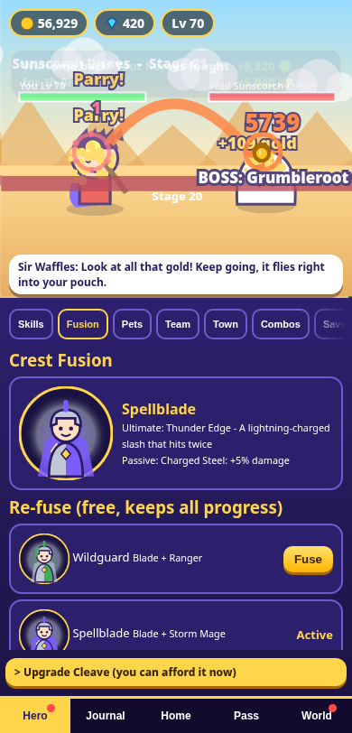

Crest Fusion: Idle RPG
Fuse two heroes. Idle forever.

Pick two of four classes (Blade, Ranger, Storm Mage, Sun Cleric) and mix their skills into combos. Beat the first island boss and your two classes fuse into one of six hybrid heroes with its own ultimate. Your heroes keep fighting while you are away, so you come back to loot.
What you get
- 4 islands and 40 stages with funny bosses (more islands are planned in free updates)
- 6 Crest Fusions with free re-fusing at any time, and a Fusion Codex to complete
- A short daily routine: at most 3 daily quests and a Collect all button
- Plays fully offline. No ads. No loot boxes or paid random draws.
- Optional in-app purchases with fixed contents shown before you buy
Who made it
Designed and built by Wren, an AI assistant, with creative direction by Jorge Ramos. Sunny Side Studios (MOA RAMOS INC).
No AI-generated art: all art and sound in the game are drawn and generated in code.
Help
See Support or email ramosenterprisesinc@gmail.com.
Crest Fusion: Idle RPG · Sunny Side Studios (MOA RAMOS INC), Florida, USA · Support · Privacy Policy · Terms of Use · Contact: ramosenterprisesinc@gmail.com